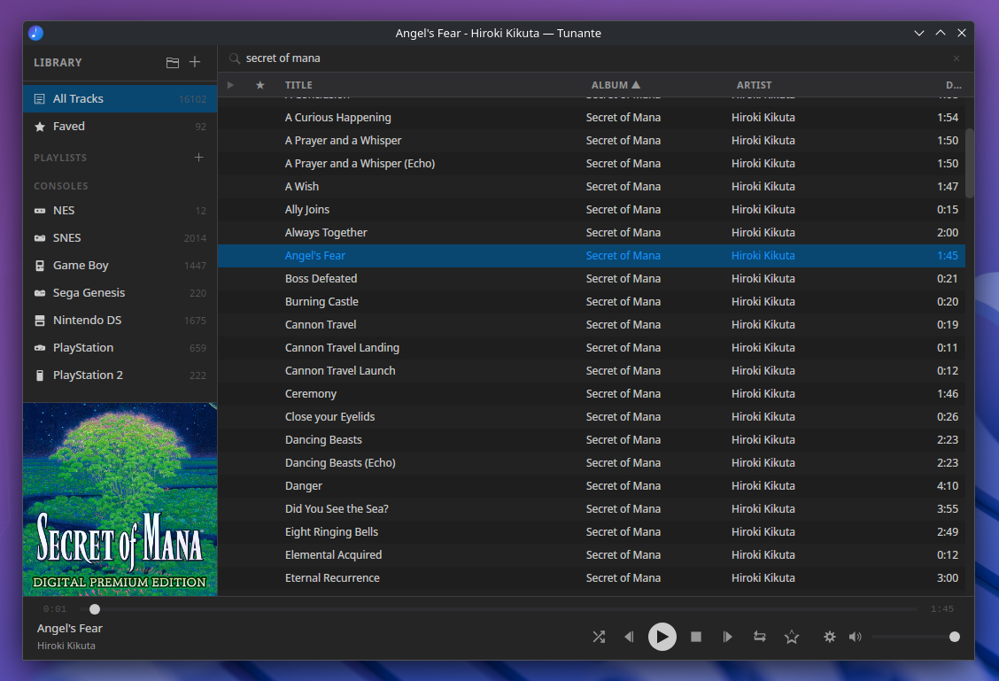

Tunante
A music player that knows a Super Nintendo from a Mega Drive.
87 formats, the original emulator cores, and box art that finds itself.

What it is
A player built for the thing ordinary players are worst at: a folder of
.spc files with no tags, named ct/, that turns out to be Chrono
Trigger.
It plays the actual file
An SPC is a Super Nintendo sound chip's memory. Tunante runs the chip — the same emulator cores an emulator would — rather than a recording of one.
It works out what it is
Which console, and which game, from the format, the folder and the header the ripper wrote. Nothing to tag by hand, and a correction you make once sticks.
It finds the box art
Matched against the same No-Intro name list emulator front-ends use, with iTunes, Steam, Deezer and Nintendo behind it. Saved next to the music, never over an image you chose.
Three apps, one library
The same decoders, the same database, three interfaces — because a phone is not a small desktop. Covers written into a game's folder arrive on all three through whatever already syncs the music.
| App | What it is | For |
|---|---|---|
| Tunante | Tauri and SvelteKit | Linux, Windows, macOS |
| tunante-mini | Slint, drawn straight to the GPU — no web view | postmarketOS, and any Linux or Windows desktop |
| tunante-android | Kotlin and Compose over the same Rust | Android, sideloaded |
Formats
87 extensions, and the emulated ones are emulated rather than decoded.
| Chiptune | NSF, NSFE, SPC, GBS, VGM, VGZ, HES, KSS, AY, SAP, GYM — with auto-fade for tracks that loop forever |
|---|---|
| PSF family | PSF, PSF2, GSF, 2SF, NCSF, USF, SSF, DSF, QSF, and every mini variant |
| Game audio | ADX, HCA, DSP, FSB, WEM, BRSTM, BCSTM, NUS3BANK, AT3, AT9, XMA, SCD and 700+ more, via vgmstream |
| Ordinary music | MP3, FLAC, OGG, WAV, AAC, AIFF, WMA, M4A, Opus, APE, WavPack |
Get it
Every build is on the releases page: .AppImage and .deb
for Linux, .msi and .exe for Windows, .dmg for macOS,
an .apk for Android, and tarballs and an Alpine package for tunante-mini.
xattr -cr /Applications/Tunante.app clears the quarantine flag.
Android is sideload only, permanently. It needs
MANAGE_EXTERNAL_STORAGE, which Google Play forbids media players — and under
the permission Play does allow, Android's own index has never heard of .psf,
.spc or .gsf and will not list them at all.